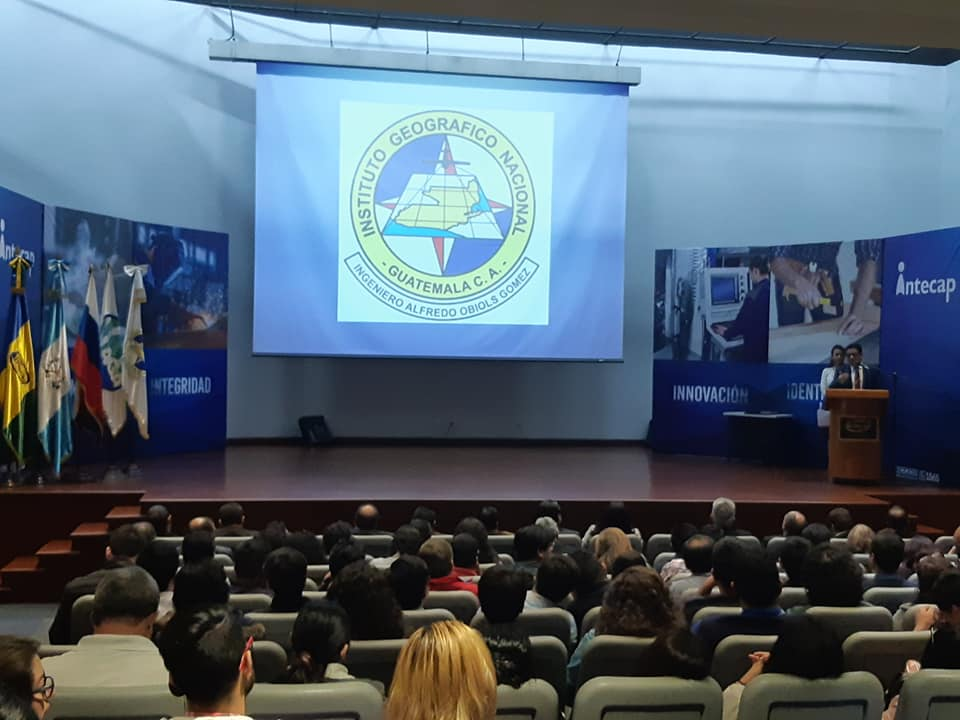
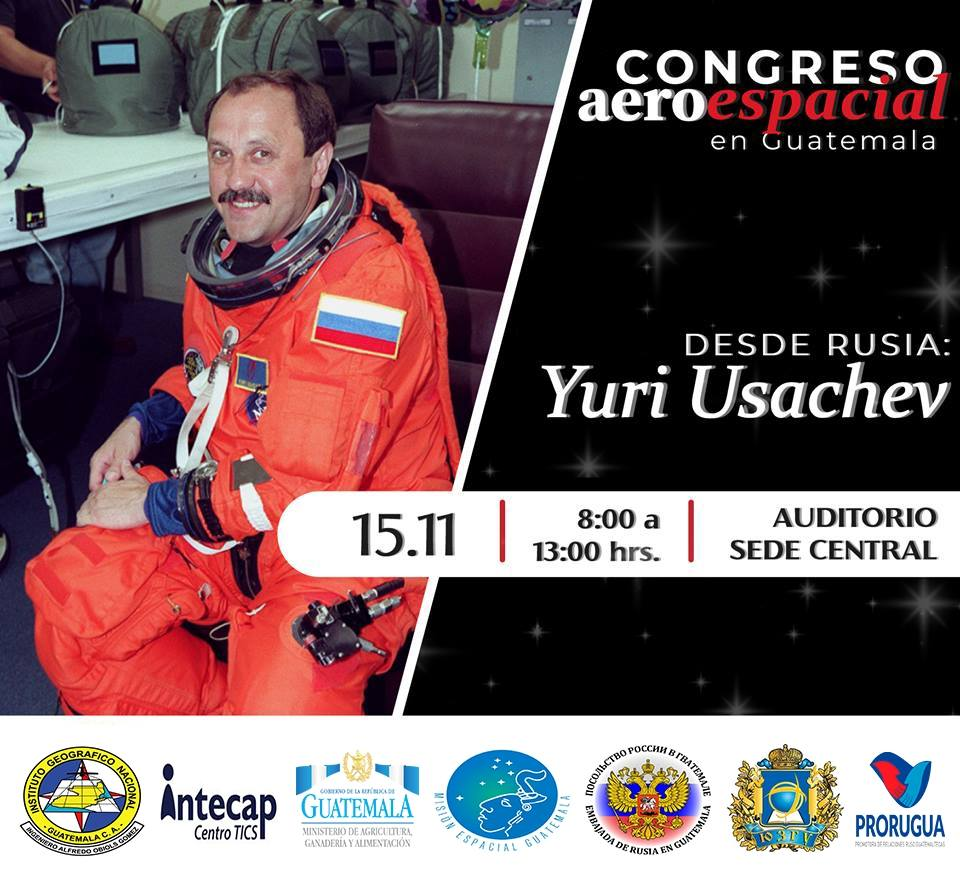
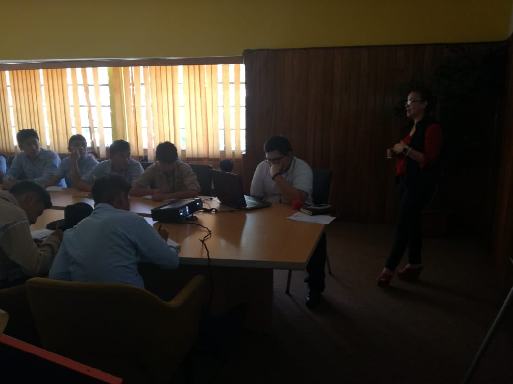
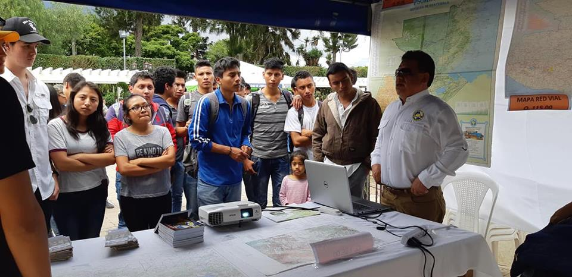
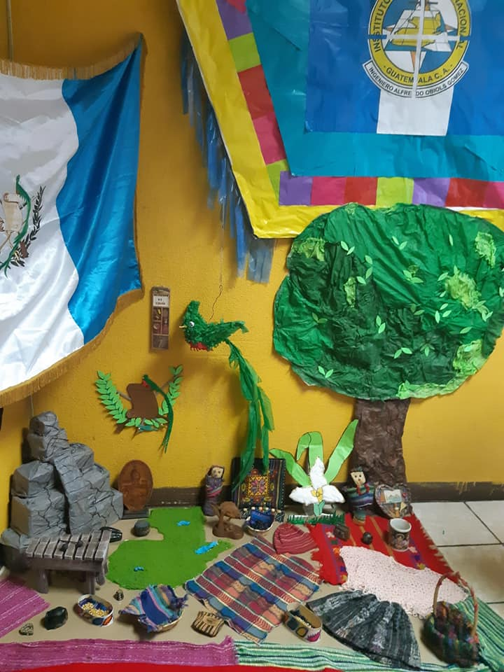
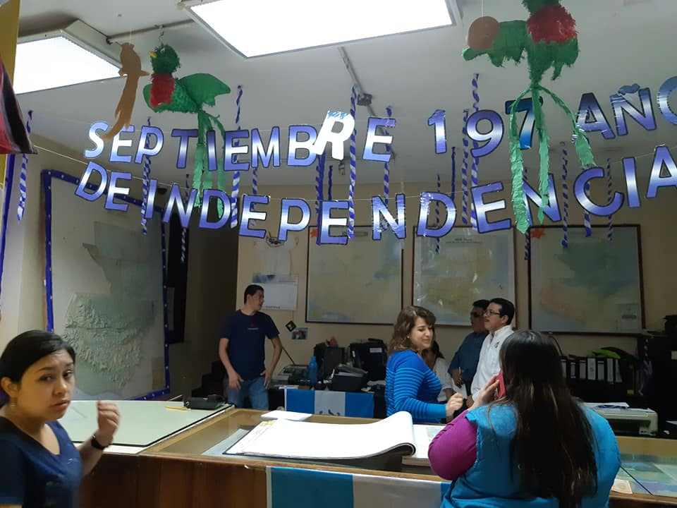

Últimos acontecimientos

-IGN- Congreso Aéreo Espacial
El congreso fue orientado con la experiencia...

Primer congreso aéreo espacial de Guatemala
Organizadores: Misión Espacial Guatemala, Embajada de Rusia...

Educación Superior
El Instituto Geográfico Nacional -IGN- como apoyo al fortalecimiento de la educación...

Semana De Ciencia Y Tecnología
El Instituto Geográfico Nacional es invitado a formar parte...

División de RRHH
La división de RRHH támbien participo en el concurso de altares civicos...

Mercadeo y Ventas
La división de Mercadeo y Ventas, támbien participo en el concurso de altares civicos...